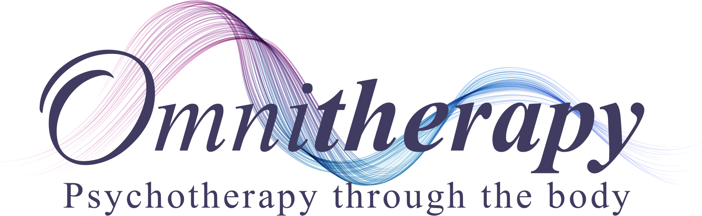
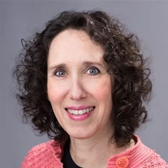
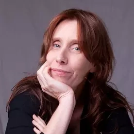
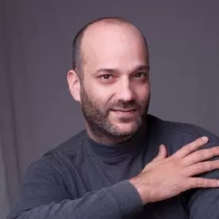

בס״ד

Omnitherapy er en unik metode, hvor psykoterapi, personlig udvikling og kropsterapi går op i højere enhed. Vi bruger en kombination berøring, samtale, vejrtrækning, bevægelse, stemme, arbejde med energi og elementer og meget mere.
Sammen bliver de til en helhed af en dialogisk dans med klienten. Disser redskaber bygges på et solidt fundament af udviklingspsykologi på højt fagligt niveau.
Hvordan ser en Omnitherapy-session ud?
-
Samtale, hvor vi sammen med klienten finder ud af, hvad vi gerne vil fokusere på
-
Klienten lægger sig fuldt påklædt på briksen. Sammen tager vi på en fælles interaktiv opdagelsesrejse i krop og sjæl
-
Opsummerende samtale støtter klienten i at tage den nye læring ud i livet
Omnitherapy er et dybt menneskeligt møde, hvor klient og terapeut samarbejder i ligeværdigt fællesskab på udviklingsvejen fra smerte til vækst og trivsel på alle planer: Det fysiske, det emotionelle, det mentale og det åndelige.
At blive behandler er en dyb rejse. Den tager oftest sin begyndelse i vores personlige smerte og vores ønske om selv at blive healet. Den fortsætter sammen med vores klienter. Den er en dyb, stærk og til tider skræmmende vej.
Kombinationen af vejviser og organiserende model (struktur) med intuition og frihed (kontakt med hjertet), forvandler rejsen til en magisk oplevelse.
Du er inviteret til at lære vores arbejdsmodel, som har været under udvikling i 25 år og bliver undervist i igennem 12 år i Danmark og i Israel.
En metode, som har åbnet vejen for mange behandlere.
En uddannelse, som er langt større end en blot en behandlingsmetode. Det er en måde at gå igennem livet på: En personlig og faglig udviklingsrejse.
Uddannelsen er delt i to selvstændige år og kan suppleres med deltagelse i supervisionsgruppe til Omnitherapeuterne.
Struktureret psykoterapeutisk tilgang
Du vil møde en tydelig psykoterapeutisk tilgang, som vil give dig en grundig forståelse af de mekanismer, der forbinder det menneskelige indre univers med den ydre virkelighed i verdenen.
De nuancerede redskaber fletter sig til et unikt sprog, som vi bruger til at skabe en fælles undersøgende og lærende dialog og transformation sammen med vores klient. På den måde bliver et tema fra livet oversat til personlig udviklingsproces gennem kroppen på briksen.
Arbejdsmodellen – den terapeutiske vejviser
Er vores grundlæggende element, som danner grundlag til brugen af de forskellige redskaber. Modellen skaber orden og klarhed i hver session og i hele behandlingsforløbet, og giver både klienten og behandleren en forståelse af de trin, de vil gå igennem på vejen til målet.
En unik kombination af struktur og intuition: Modellen og tilgangen muliggør en tryg ramme for de redskaber, du har i forvejen, så alt hvad du rummer kan udfolde sig i det terapeutiske rum.
Uddannelsen er en skøn blanding af:
-
Interaktive undervisningsoplæg
-
Gruppedynamiske øvelser
-
Fysiske og emotionelle træning
-
Udveksling og træning af teknikkerne med medstuderende
-
Teoretisk og praktisk undervisning om modellen
Uddannelsen foregår i små hold af max. 12 deltagere, for at muliggøre dybe processer hos alle både fagligt og personligt. For at være en god behandler er der brug for mere end metoder og redskaber. Her vil du finde et varmt og støttende fællesskab, som vil assistere din udvikling som behandler og som menneske, både under uddannelsen og efterfølgende.
- Helhedssyn på mennesket
- Du får en vejviser, som er en gave til enhver behandler, til en dyb forståelse af indre menneskelige grundlæggende mekanismer. Vores unikke model skaber orden og klarhed i behandlingsforløbet både for behandleren og for klienten
- Berøring
- Du vil lære mange former for berøring, bevægelse og vejrtrækning, som muliggører en dialog via kroppen. En dialog som udforsker, opdager og skaber dybe indre forandringer
- Samtale
- Du vil lære hvordan man forvandler en samtale til oplevelse og kropsarbejde og hvordan ord kan flette sig ind i kropsbehandling.
- Sammenkobling
- Du vil få bevidste teknikker til kobling af dit nervesystem med klientens nervesystem, så I sammen kan udforske de indre processer gennem direkte oplevelse og kontakt med kroppen.
- Udviklingspsykologi
- Undervises gennem kroppens og barnets perspektiv bliver forvandlet til levende viden, som er nødvendig i udviklingens- og helbredelsesforløbet. Undervises lige som det meste af uddannelsen af Aut. Cand. Psych. Gilly Gall
Første år
- Behandlingsmodellen – den menneskelige indre struktur
- Metodens seks dimensioner – følelse-krop-virkelighedsforbindelser
- Variation af berøringsteknikker i psykoterapeutisk sammenhæng
- Udviklingspsykologi
- Opbygning af tilladende terapeutisk rum
- Fra “at vide” til “ikke at vide” og tilbage
- Føring fra sårbarhed til styrke
- Sammenkobling af behandlingstrinene: Samtale, kropsarbejde, opsummerende snak.
- Opbygning af et effektivt, personligt tilpasset behandlingsforløb
- Klienten som aktiv partner
- Behandler-klientrelationen
- Fra offer til mesterposition
Ved første års afslutning, vil du modtage et deltagerbevis, hvis du har deltaget i mindst 85% af undervisningen og har indhentet evt. manglende indhold.
Andet år
- Ned ad oplevelsesniveauerne – hvordan lærer du klienten at kontakte den dybere oplevelse
- Kropsorienteret arbejde med det indre barn
- Fortiden og traumer som personlighedsdannende aspekter
- Tomhedsoplevelse og de relaterede oplevelser – meningsløshed, magtesløsheden, ensomhed m.m.
- Arbejde med forskellige kropsdele og deres specifikke betydning
- Arbejde med kvaliteter – hvordan vækker man en specifik manglende kvalitet hos klienten
- Arbejde med elementerne jord, vand, ild og luft som et diagnostisk og behandlingsmæssigt redskab
Ved andet års afslutning, vil du modtage et deltagerbevis, hvis du har deltaget i mindst 85% af undervisningen og har indhentet evt. manglende indhold.
Andet år kræver klientarbejde (praktik) med minimum 2 forløb og 2 supervisionsbehandlinger.
Certifikat for afsluttet uddannelse er betinget af:
- gennemførsel af praktik
- godkendelse fra lærernes side
Første år
- 10 moduler søndag 9.30–18.30 og mandag 17.30–21.30:
- 20.–21. november 2022
- 22.–23. januar 2023
- 5.–6. februar 2023
- 19.–20. februar 2023
- 21.–22. maj 2023
- 4.–5. juni 2023 (v. Omni Gal)
- 18.–19. juni 2023
- 27.–28. august 2023
- 10.–11. september 2023 (v. Ron Freund)
- 29.–30. oktober 2023
-
4 træningseftermiddage med hjælpelærer Susan Blom og assistenterne, søndag 14.00–18.00:
- 26. marts 2023
- 30 april 2023
- 6. august 2023
- 8. oktober 2023
Pris: 24,000 kr. (kan deles i flere rater)
Andet år
- 5.-8. januar 2024 Dobbelt modul i Israel
- 25.-26. februar 2024
- 7.-8. april 2024
- 12.-13. maj 2024
- 16.-17. juni 2024
- 18.-19. august 2024
- 22.-23. september 2024
- 27.-28. oktober 2024
9 moduler á 12 timer søndag 9.30–18.30 og mandag 17.30–21.30:
samt mindst 2 supervisionsmøder á 1½ t. (ikke inkl. i prisen)
Pris: 20,000 kr. (Kan deles i flere rater)
Der er fire trin i Omnitherapy-uddannelsens optagelsesforløb. Du skal:
-
Deltage i introduktionsworkshop (tilmelding til den kommende workshop. Datoer for nye workshops vil blive annonceret i løbet af sommeren 2024)
-
Modtage mindst én privat session
-
Udfylde ansøgningsskemaet (PDF)
-
Tale personligt med hovedlæreren
Det er vigtigt for os at udvælge deltagerne med største omhu, således at det vil være forsvarligt at lade dem udveksle sessions med hinanden og sikre, at de kan indgå i holdundervisning på en måde, som gavner holdet. Der er ikke planlagt flere hold lige nu. Formen er nu ændret til én intensiv uge i Israel samt 3 moduler i Danmark og 6 træningsmoduler á 6 timer en søndag hver anden måned. Intereserede kan kontakte Mikkel Rasmussen på mikkel@behandleren.nu og tlf. 4410 7061
Cand. Psych. Aut. Gilly Gall
Som privatpraktiserende psykolog, har Gilly i over 30 år bygget broer mellem psykologi, videnskab og spiritualitet. Hun er forfatter, og nu også hovedlæreren på Omnitherapy i Danmark. På Omnitherapy i Israel, underviser hun i udviklingspsykologi, diagnostik og i tro og overbevisninger i terapirummet. Mere om Gilly.
Omni Gal og Ron Freund
Omni og Ron er grundlæggere og ejere af Omnitherapy skolen. De har begge over 25 års international undervisning og behandlingserfaring. De har nu overladt ansvaret for uddannelsen i Danmark til det danske hold, men vil de være gæstelærere på to af modulerne i 2023.
Hjælpelærer
Susan Blom
Vi holder introduktionsworkshoppen Frihed i terapirummet, søndag d. 23. oktober kl. 14:00-18:0 på Frederiksberg. Læs mere.
Ønsker du at vide mere, er du velkommen til at kontakte Gilly på 6084 8401 eller e-mail gilly@psykologisk-klinik.com.
Christel Schneidermann
Vamdrupvej 3a, 2610 Rødovre
2980 4460
chris@db9.dk
kreativindsigt.dk
Agnete Hoffmeyer
Smedeengen 3, Torslunde, 2635 Ishøj
Center for ILT
20187146
agnetehoffmeyer@gmail.com
www.i-l-t.dk
Suzi Sofia Samtale og Kropsterapi
Helsingør
6018 7753
kontakt@suzisofia.dk
Tanja Hoeg Løhndorf
Hejrevej 30, 3. sal, 2400 København NV
5192 8071
tanja@intimatelyalive.com
intimatelyalive.com
Susan Blom Jørgensen
behandler p.t. på to adresser:
Lyngby Behandlerhus, Christian X’s Allé 168, 2800 Lyngby
Gl. Kongevej 60, 10. sal, 1850 Frederiksberg C
2961 5590
kontakt@susanblomkropsterapi.dk
susanblomkropsterapi.dk
Signe V. Bentzen, M.A.
behandler p.t. på to adresser:
Nansensgade 47, 1366 København K
Carl Jacobsens vej 37A, 2. tv., 2500 Valby
2382 6115
sexologhuset@gmail.com
sexologsigne.dk
Sisse Plesner Kropsterapi
Møllevej 19, 3630 Jægerspris
2960 0446
kontakt@sisseplesner.dk
sisseplesner.dk
Eline Roos
Borups Alle 140 kld., 2000 Frederiksberg
2242 3255
elineroos@live.dk
elineroos.dk
Lise Lillesøe
behandler p.t. på to adresser:
City kropsterapi, Knabrostræde 3, porten tv, st. th., 1210 København K
Loaderiet Lyngby, Agervang 8, 2800 Kgs. Lyngby
2883 9055
lise@liselillesøe.dk
liselillesøe.dk
Gilleleje Hovedgade 19, st, 3250 Gilleleje
2330 2079
facebook.com/omniterapi Psykolog Charlotte Witt
Langerødvej 39, 3480 Fredensborg
6166 4947
mail@charlottewitt.dk
charlottewitt.dk/
Mads Lindegaard
Blegdamsvej 80 kld. tv., 2100 København Ø
2328 3231
info@madslindegaard.dk
madslindegaard.dk
Marie Kiil
3000 Helsingør
7111 9433
kontakt@mariekiil.dk
mariekiil.dk
School of Beliefs v/ Brit Kirkegaard
Kirkegaard, Fuglebakkevej 14, 3000 Helsingør
2620 0929
kontakt@britkirkegaard.dk
britkirkegaard.dk
Maiken Thomsen
Ralphs Vænge 31, 2950 Vedbæk
5334 7310
Maikenet85@gmail.com
Elevbehandlinger
Vores dygtige elever på 2. år har brug for supervisionsklienter at øve sig på.
Mikkel Rasmussen
Murergade 10, 3000 Helsingør
4410 7061
mikkel@behandleren.nu
behandleren.nu
Valyou Kropsterapi v. Gitte Sørensen
behandler p.t. på to adresser:
Køge Klinik, Nørregade 3C, 1. sal, 4600 Køge
Søhøj 35, 2690 Karlslunde
2847 3407
valyoukropsterapi@outlook.dk
valyoukropsterapi.dk
Thorny Johannsdottir
Reezet
Toftebakken 9B, 3460 Birkerød
5191 6689
thorny-johannsdottir@hotmail.com
Henriette Kronborg
Nobisvej 24
3460 Birkerød
2631 1557
henriettekron@hotmail.com